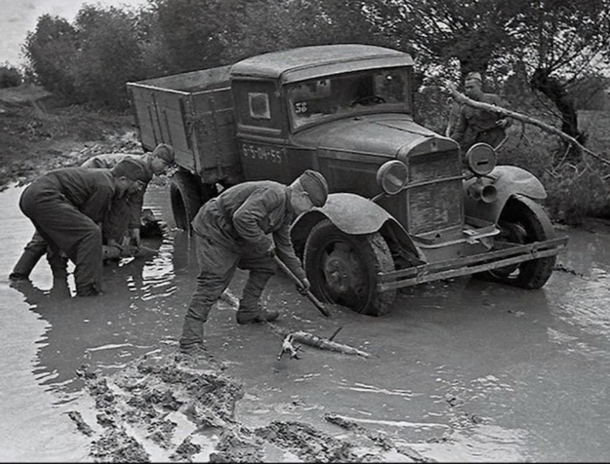
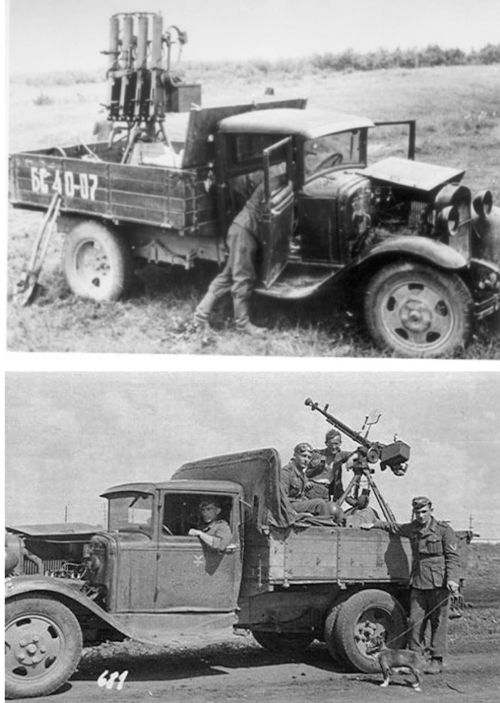
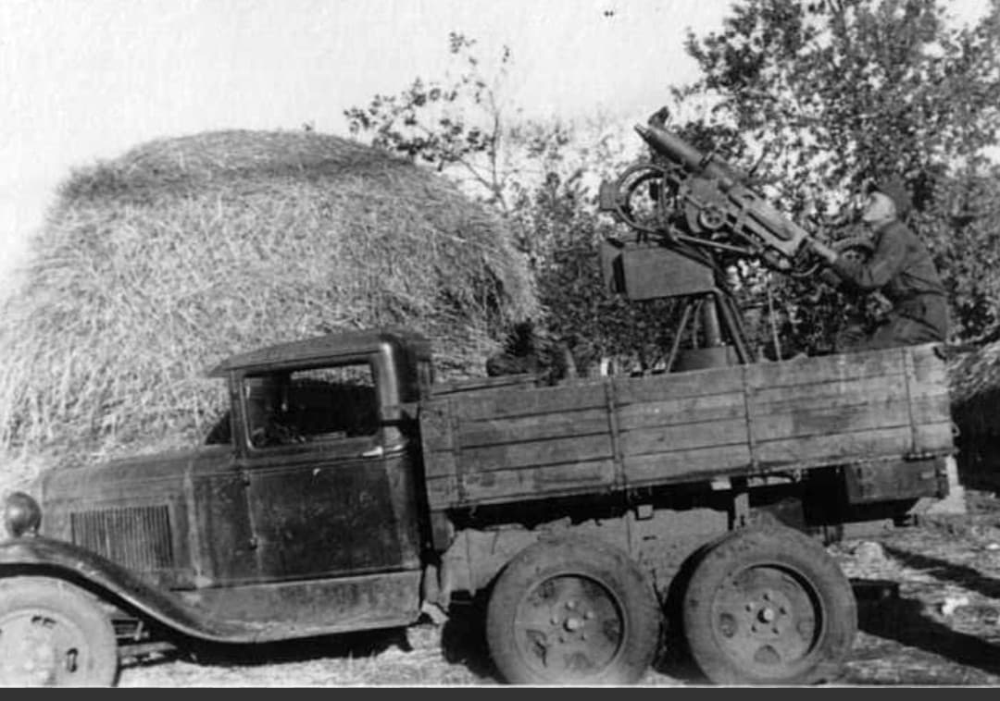

La bête de somme rustique et indispensable de la logistique et du transport de l'Armée rouge

Le GAZ-AA est un camion utilitaire léger à deux essieux, véritable pilier de la logistique de l'Armée rouge et de l'économie soviétique durant la Seconde Guerre mondiale.
Directement dérivé du célèbre camion américain Ford Model AA produit sous licence, il a été adapté aux conditions climatiques et industrielles rigoureuses de l'URSS. Simple, robuste et facile à réparer, il transportait les troupes, les munitions et le ravitaillement sur tous les fronts du conflit.
Fabriqué à partir de 1932 par l'usine automobile de Gorki (GAZ), le véhicule repose sur un châssis en acier renforcé propulsé par un moteur 4-cylindres à essence de 3,3 litres développant initialement environ 40 chevaux. Sa charge utile standard était de **1,5 tonne** (souvent dépassée en conditions de guerre).
Sa conception extrêmement rustique lui permettait de s'accommoder de carburants de médiocre qualité et d'un entretien minimal. Une variante simplifiée, le **GAZ-MM**, dotée d'un moteur un peu plus puissant de 50 ch et d'éléments économiques en raison des pénuries de matières premières, fut également produite massivement en temps de guerre.

Le GAZ-AA et sa version GAZ-MM étaient omniprésents au sein des unités de transport logistique. Ils ont joué un rôle particulièrement héroïque lors du siège de Leningrad, circulant de nuit sur la glace fragile du lac Ladoga (la Route de la Vie) pour ravitailler la ville assiégée en vivres et en munitions.
En plus de sa fonction de transport de troupes et de fret, le châssis du GAZ-AA a servi de base à de multiples adaptations militaires : plateformes antiaériennes armées de mitrailleuses quadruples Maxim, ambulances de campagne, ateliers mobiles et camions de transmissions.

Produit à plusieurs centaines de milliers d'exemplaires sous diverses configurations, le GAZ-AA a fourni l'ossature logistique sans laquelle les grandes offensives mécanisées soviétiques n'auraient pu être soutenues.
Il demeure dans l'histoire militaire le symbole de l'endurance industrielle soviétique face à l'immensité du Front de l'Est.
Page du Musée HOP WW2 – Section Véhicules Terrestres Soviétiques